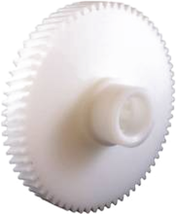

CNC machining of POM (Delrin®): the precision plastic
The plastic of precision mechanics: low friction and high dimensional stability.

POM (Delrin®) at a glance
What is POM (Delrin®)?
POM (polyoxymethylene), also called polyacetal or Delrin®, is a stiff, slippery and very stable engineering plastic.
It absorbs very little moisture: its dimensions stay stable, which makes it the ideal plastic for precision gears, slides and mechanisms.
Machined from solid, it offers better accuracy and surface finish than a printed part.
Strengths & limits
- Low coefficient of friction
- Very stable, absorbs little moisture
- Stiff and fatigue-resistant
- Very precise machining
- Hard to bond
- UV-sensitive outdoors
POM (Delrin®) applications
Precision mechanics
Gears, slides, mechanisms.
Industry
Clips, guides, sliding parts.
Food industry
Conveyor parts (depending on grade).
Technical data
| Density | ≈ 1.4 g/cm³ |
|---|---|
| Friction | Very low |
| Dimensional stability | Excellent |
| Water absorption | Very low |
| Family | Polyacetal (POM) |
Indicative values (manufacturer data or typical values for the material family). * To be validated for the final application. Full datasheets on request.
Designing your part in POM (Delrin®)
- Plan mechanical fasteners rather than bonding.
- Indicate gear tolerances.
- Deburring
Machined on

POM (Delrin®) or something else?
POM (Delrin®): frequently asked questions
POM or Ertalon?
POM for precision and stability; Ertalon for toughness and damping.
Other CNC materials

Aluminium
Lightweight · Machinable · Versatile
View the sheet →
Brass
Machinable · Attractive · Conductive
View the sheet →
Copper
Conductive · Machinable · Attractive
View the sheet →
Bronze
Wear-resistant · Self-lubricating · Durable
View the sheet →
Titanium
Ultra-strong · Lightweight · Biocompatible
View the sheet →
Ertalon® (PA6)
Tough · Wear-resistant · Damping
View the sheet →A part to make?
Send your 3D file or describe what you need: instant quote with a file, custom quote within 24 h.